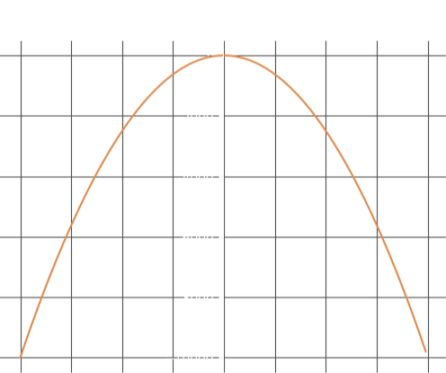
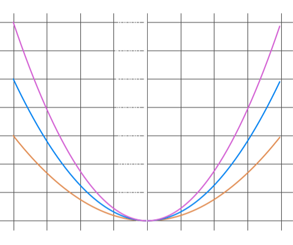

Graphs of Quadratic Functions
In understanding quadratics, the graphs produced by a quadratic function are important to consider, as these graphs are the basis for it's intuitive use in the real world. I have dedicated this section to exploring these graphs with an examination of how changes in the variables result in different types of parabolas. Regardless of the change, note that all quadratic graphs are parabolas of some shape or form.
Here we have the simplest quadratic graph that we can find. Recall, that quadratics are second degree polynomials of the form: \[ ax^2 + bx + c \]
In this case, the constants b and c are = 0, and a = 1 giving us:
\[y = 1x^2 + 0x + 0 \]
\[y = x^2\]
The graph is a simple 'U' shaped parabola that is symmetic about the y-axis. It minimum value is 0, where it touches the x-axis and it's slope changes consistently - as opposed to straight lines that have a constant gradient.
It may be interesting to note that this graph can be used to graphically determine the square of any number, and conversely it can be used to determine the square root of any number.
In this section we have the graph of \[y = -x^2\]
It has the exact same properties as the previous graph, but it is inverted. Hence, instead of having a minimum point of zero, it has a maximum point of zero.

There are a few variations of the general function \(y = ax^2\) that are represented in the graph on the right. As the constant '\(a\)' is changed, the slope of the curve changes. Essentailly, the slope gets steeper as '\(a\)' increases. If '\(a\)' were neagative, the curves would be the same, but inverted in the x-axis as was shown in the graph of \(y = -x^2\).

In this section we are simply adding or subtracting a value to the simple quadratic (\(y = x^2\)) that we have been working with thus far. Notice in the graph on the right, that the y-intercept changes in a similar fashion to a straight line when change the value of '\(a\)'. Consider the similarities between the equation of a straight line and the curved equation that we are currently working with:
\[y = mx + c \ \ \ ---> straight \ line\]
\[y = x^2 + a \ \ \ ---> curved \ line\]
In both cases, the constant on the right changes the y-intercept, and the x coefficient (if any) controls the slope of the lines.
Note, that all of the '\(y\)' values are displaced by a magnitude equal to the constant on the right, i.e. '\(a\)'.
Now we come to a much more familiar quadratic equation:
\[y = (x - 1)^2\]
This essentially is the root of the quadratic that we are so accustomed to solving for by factorization, completing the square or using the quadratic formula. With this function, we are subtracting '1' from our x value. The effect that this has, is that we arrive at a graph exactly like the graph of \(y = x^2\), but all of the x values are shifted to the right by a value of '1'. Expanding the quadratic, we get:
\[y = x^2 - 2x + 1\]
So we can see, that we are indeed dealing with a regular '\(x^2\)' curve that is only slightly altered. The co-efficient of '\(x^2\)' is '1', which means that its slope does not change, but the constant on the right is now '1' - which means that the y-intercept is now '1'.
So what is going to happen with the following equation:
\[y = (x - 1)^2 - 40\]
When we expand it we get:
\[y = x^2 -2x -39\]
So we can see that the co-efficient of '\(x^2\)' is '1', and hence we have a curve that is sloped exactly the same as the graph of \(y = x^2\). However, the x value is altered and we know from the previous section that subtracting '1' means shifting the graph to the right by a factor of '1'. The y-intercept is now much lower at '-39', which means that we have shifted the curve 40 units down on the y-axis.


².png)
² - 40.png)